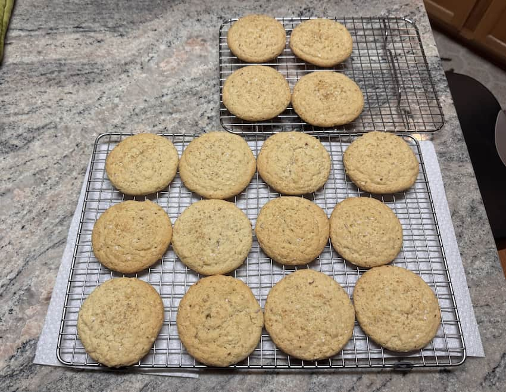

blog.kevin.garden/almond-sugar-cookie-recipe
Almond sugar cookies
2025-12-29
Happy 2025! Haha.
These cookies have the form factor and tender center of a classic American sugar cookie combined with the crispy edge, mild sweetness and slightly-salty almond flavor of a Chinese almond cookie.
I came up with this over the holidays when my sister first requested I make sugar cookies, then later (unrelated) we shared a frangipane tart from Whole Foods, to which she said she loved almond-flavored desserts, something I never knew about her. I had already bought turbinado sugar to coat sugar cookies with but now I really wanted to make Italian pignoli or ricciarelli cookies. I ended up making neither.
I adapted this recipe primarily from Redditor CatfromLongIsland’s recipe for almond sugar cookies (which they adapted from All Recipes).1 I used some ingredient additions and ratios (less butter, addition of egg white instead of yolk) from Vaughn Vreeland’s NYT recipe for rum-buttered almond cookies.2 Finally, I reduced the sugar to suit my palate (see notes) following a recipe for Chinese almond cookies.3
Ingredients
Yield: About 18 3½ inch cookies
- 1½ cups all-purpose flour
- 1 cup superfine blanched almond flour
- 1 cup sliced almonds, untoasted
- 1 tsp baking soda
- ½ tsp baking powder
- 1 tsp kosher salt (Diamond Crystal)
- ¾ cup (1½ sticks) unsalted butter, softened
- 1 cup plus 2 tbsp granulated sugar
- 1 large egg
- 1 large egg white
- 1 tsp almond extract
- Turbinado sugar, for sprinkling
- Flaky sea salt, at the end
Directions
- In a food processor, combine all-purpose flour, almond flour, sliced almonds, baking soda, baking powder, and salt. Pulse until the mixture is uniform and the sliced almonds are in small pieces, about the size of coarse breadcrumbs.
- In the bowl of an electric mixer, beat together the butter and sugar until fluffy. Beat in the egg and egg white until creamy, then add the almond extract.
- Add the flour mixture to the butter mixture and beat on low or mix with a rubber spatula until no dry spots remain. Cover and refrigerate dough until hard enough to scoop, about 30 minutes and up to 12 hours.
- When ready to bake, preheat oven to 350°F (180°C). Line 2 baking sheets with parchment paper.
- Scoop 3 tablespoon mounds of dough (or using a #20 scoop) onto baking sheets, sprinkling them generously with turbinado sugar. Place them at least 2 inches apart and bake until the cookies have leveled out and the edges become slightly golden, 18 to 22 minutes. Immediately after pulling cookies from oven, top with flaky salt. Let cool for 5 minutes on the baking sheet before transferring to racks to cool completely.
Store cookies in an loosely sealed tin/container at room temp with a paper towel. If you store them in an airtight container, the edges will lose their crispiness. They’ll probably last up to a week, but I haven’t been able to test this.

Notes
- If you prefer your cookies closer in sweetness to a standard sugar cookie, add an additional ¼ to ½ cup sugar (this will change the baking time so you’re on your own).
- If you’re using Morton’s kosher salt, reduce to ½ tsp instead of 1 tsp.
- You can use a hand whisk instead of an electric mixer; creaming butter manually isn’t that bad.
- A #20 cookie scoop is what my parents had in their kitchen so these cookies turned out rather large. If you used a smaller scoop like a #30 (~2 tablespoons), they’d bake faster and you would probably get 25+ cookies. They would also take up three trays.